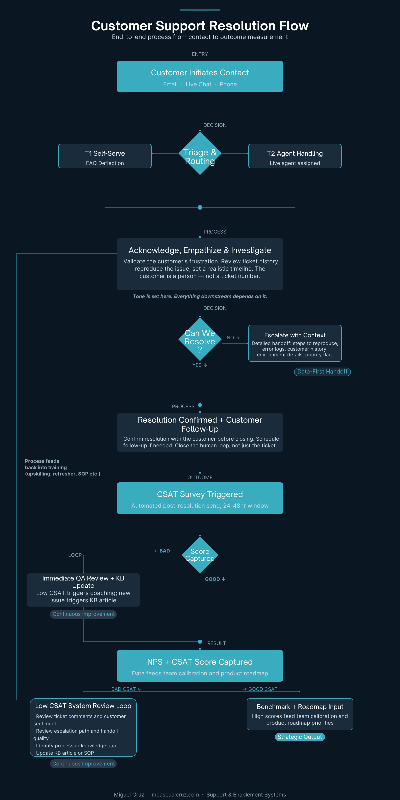

Customer Support Resolution Flow
A public-facing support operations artifact mapping customer intake, triage, investigation, escalation, resolution confirmation, CSAT measurement, QA review, and continuous improvement loops.

Problem
Support teams need clear paths for triage, escalation, customer follow-up, and feedback review so ticket handling does not depend only on individual judgment.
Approach
The flow models the support journey as a repeatable system: intake, routing, investigation, escalation, resolution, CSAT collection, QA review, and SOP updates.
Outcome
The artifact demonstrates how customer feedback can feed training, calibration, knowledge management, and product roadmap conversations.